The feel
Hand-painted 3D looks brushed by hand because it is: most of the detail is painted, including the light, which usually falls from the top.1 Rare set out to make Sea of Thieves an illustrative world filled with brush marks,2 and World of Warcraft's art rules require every piece to have hand-painted textures that match the game's style.3
The paint does work that geometry and lighting would otherwise do. Valve bakes or paints light into the colour textures of Dota 2's characters, because the game's subtle lighting loses much of the sculpted detail in their normal maps.4 Painted textures also hold up close: Valve found that Team Fortress 2's abstract, hand-painted texture designs held up under magnification better than textures made from photo reference, thanks to their more intentional design and lack of photo artefacts.5 The look lasts, too: Ion Hazzikostas, World of Warcraft's senior game director, counts its stylised, painterly art style among the best decisions the game made, and says it has stood the test of time.6
- chunky
- heavy
- sunlit
- saturated
- hand-made
- tavern-warm
Where it comes from
Blizzard released World of Warcraft in 2004,7 and its art team calls hand-painted texturing and low-poly modelling the essence of the game's style.8 Valve's Team Fortress 2 (2007) began with textures painted in watercolour on canvas and scanned, before its artists moved to photographs reworked with filters and digital brush strokes.5 Runic Games' Torchlight (2009) set crisp, comic-book characters on painterly backgrounds and kept the art low-tech so it would run on virtually any system.9 In 2014 Riot described the new look of League of Legends' Summoner's Rift as hand-painted, yet graphic.10
Core elements
Light painted into the texture
The colour texture carries the light and shadow.4 The usual light source is a top one, partly because a model lit that way works in most lighting once it is in the engine.1 Sketchfab recommends its Shadeless mode, with real-time lights switched off, for hand-painted art whose lighting is already in the textures.11
Painted detail on low-poly models
Models stay low-poly and the paint carries the detail. On Summoner's Rift, painted elements define the edges and hide polygon budgets that would otherwise look hard and low-end.10 Valve kept Team Fortress 2's repeated structures to a minimum too, because conveying the impression of repetition matters more than modelling every detail.5
Heavy exaggerated shapes
Shapes are thick and exaggerated. World of Warcraft's lead environment artist says objects should look heavy, like they could hurt you, and praised a contest entry for using no straight lines: its columns curve slightly and the building's angles are exaggerated.3 Blizzard's senior art director Samwise Didier is known for characters with big shoulders, feet and hands.12 Overwatch kept the habit: its art director, Bill Petras, says the team had to balance a feeling of newness with Blizzard's core values, among them big, bold silhouettes and very dynamic proportions and shapes.13
Painted edge bevels
Edges are rounded off in paint. One technical artist's study of Overwatch found big bevels baked into the textures, giving objects a softer, rounder finish and a rim-light effect for free, and corner pieces that stop levels feeling like a series of boxes.14 In a hand-painted texture, highlights define the bevels, and they follow the light source instead of running in completely straight lines.1
Saturated colour and warm-cool lighting
Colour runs richer than life. Team Fortress 2's colours border on realism but with increased saturation and value contrast,5 and Dota 2 has a very bright and intense palette with lots of saturated colours.4 The hue shifts as well as the value: warm lights with cool shadows work well and are a good way to learn it, though they are not a rule.1
Visible brushwork and simple shapes
Brush marks stay in, but the picture stays simple. Team Fortress 2's world textures keep loose details and visible brush strokes to show how a surface would feel, while holding visual noise to a minimum.5 Riot simplifies shapes and values on Summoner's Rift so the map reads easily wherever you look.10
How to do it
Block out heavy shapes on a budget
Start with big, simple forms. Blizzard's WoW art contest asks for about 1,500 polygons for a mature tree, and 6,000 polygons with one 1024 by 1024 texture for a character; its environment brief is a small diorama with trees, rocks, grass, props and a small structure such as a shrine.15 Blizzard started the contest to help students learn its art style, and its strict guidelines are meant to ask only what a professional would be expected to know.8 Bend straight lines with a lattice deformer, but keep the UVs the same once you have started painting.1
Unwrap the model for painting
Unwrap before you paint: painting on the model needs a UV unwrap, and power-of-two squares such as 512 by 512 or 1024 by 1024 keep it fast and responsive.16 Overwatch used 1024 by 2048 textures for some characters, probably to keep long UV islands straight instead of painting them at an angle.14
Bake an underpainting
Bake an ambient occlusion map and multiply it over the flat base colour at 80% opacity. Render a light map from a couple of white point lights with shadows off, put a 90, 90, 90 grey Screen layer at 85% over it, and set that group to Soft Light at 100%.4 Valve calls the result the underpainting, and paints the colour layers on top in Overlay at 80%.4
Light it from the top
Lay in flat colour, then light each face from the top: an overall top-down gradient, smaller gradients inside each face and some painted ambient occlusion. Avoid soft brushes for this pass.1 The green channel of a baked world-space normal map already looks lit from above, and a baked position map holds the top-down gradient,1 while Valve starts its top-to-bottom, light-to-dark gradient from the point light map.4
Highlight edges and add story details
Paint highlights along the bevels, following the light and never in completely straight lines. Cracks and other details change value with the light as well.1 World of Warcraft's art rules ask every piece to tell a story.3 Moss, rust, dirt and dust add colour variation,1 and Valve gives Dota 2's characters large, crisp graphic patterns for legibility, blocked in early and sharpened later inside a layer mask.4
Switch between 3D and 2D painting
Paint directly on the mesh by projecting onto its UVs, then work on the same image in any 2D paint program.16 Marie Lazar, a Blizzard contest winner, unwrapped her models and painted the textures in 2D, and found 3D painting invaluable for blocking in light and painting over seams.3 Thais Del Rey also works back and forth between the two, for the projection painting she gets in 3D.1
Keep in-game lighting simple
An unshaded material skips lighting and outputs the albedo directly, so the painted light is all you see, and per-vertex lighting can considerably increase performance on low-end or mobile devices.17 A portfolio piece can afford more: for her WoW-style diorama, Del Rey used a warm directional key light, a faint cool directional fill from the opposite side with cast shadows off, a skylight, fog, and several point lights and spotlights, without worrying about optimising the scene.1
Cheat sheet
Do
- Run the civilian test. Show your work to someone who knows nothing about games: if they look at your door and say "nice window", it needs more work.8
- Rank the screen by contrast. The background is the canvas, characters stand out from it, effects come next and the interface sits on top.10
- Keep each material the same across a scene. If there is gold everywhere, make it look like the same gold.1
- Clamp shadows and highlights when you stack blend modes, so the palette doesn't blow out into unusual colours.4
- Finish one thing properly. WoW's senior art director advises blocking out the whole scene and taking one part, such as a Warcraft-style house, all the way, instead of polishing everything to 60%.8
Avoid
- Soft brushes for the light pass. Thais Del Rey avoids them so the surface stays more interesting.1
- Flat-looking faces in one colour all over. Paint how light would hit each surface, and shift the hue.1
- Visible technology: hard polygon edges and crunchy, overly realistic textures. On the old Summoner's Rift, the polygon edges stuck out and dated the visuals.10
- Photographic detail everywhere. High-frequency texture and geometric detail can overpower a designer's ability to compose the scene and bring out gameplay features.5
- Engine lighting that fights the paint. Del Rey moved her diorama to another renderer because she didn't like the way the lighting reacted with her hand-painted textures.1
Tools and tutorials
- Dota 2 Workshop: Color Texture Light Baking
Valve's whole layer stack for a painted colour texture, with every blend mode and opacity.4
- Crafting a WoW Diorama: Textures, Painting, Lighting
Thais Del Rey's baked maps, blend modes and a painted wooden cube, step by step.1
- 3DCoat
Painting in 3D. A Blizzard contest winner found it invaluable for blocking in light and painting over seams.3
- Blender Texture Paint
Paint straight onto the mesh in the 3D Viewport, then finish the same image in any 2D paint program.16
- Godot: Standard Material 3D
Unshaded materials output the painted colour directly, and per-vertex lighting helps on low-end and mobile devices.17
- Marmoset Toolbag
Del Rey's baker of choice, and the renderer she picked for her non-PBR, hand-painted materials.1
Palette
Sampled from World of Warcraft (Silvermoon City, Pandaria and a Midnight player house), Torchlight II, Hob and Sea of Thieves. Click a pot to copy its colour.
Feel the vibe
In motion
Listen
Good company for a long session painting bark, leaves and stone.
YouTubeKeep it playing while you paint warm light into moss and carved stone.
YouTubeFor painting water and sky, one soft gradient at a time.
YouTubePut it on while you study Arcane's frames, stroke by stroke.
YouTubeLeave it running while you paint a whole prop, from base colour to moss.
YouTube
More references
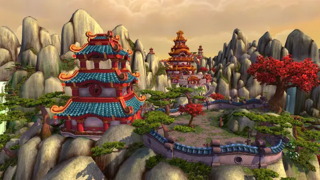
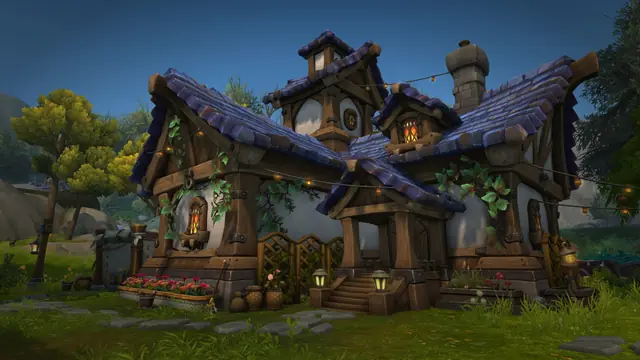
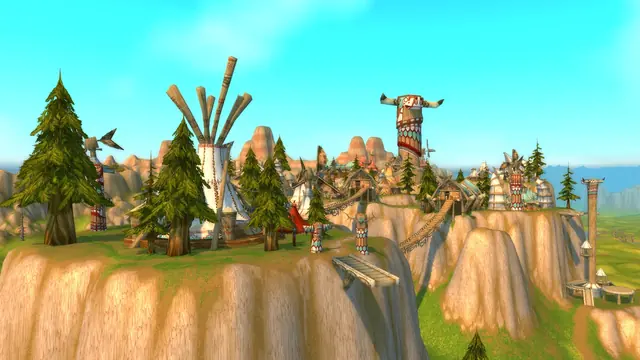
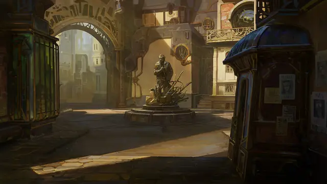
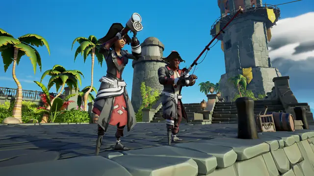
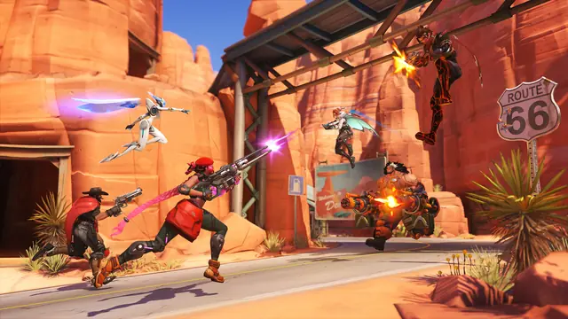
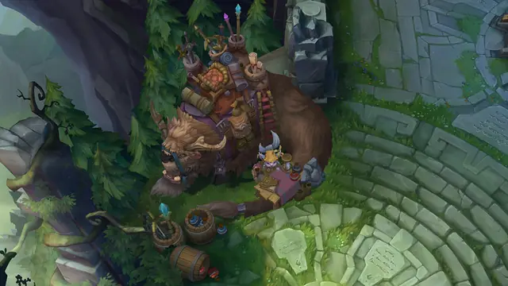
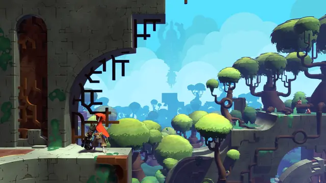
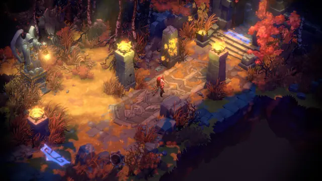
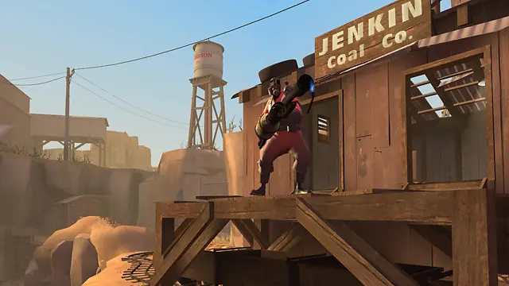
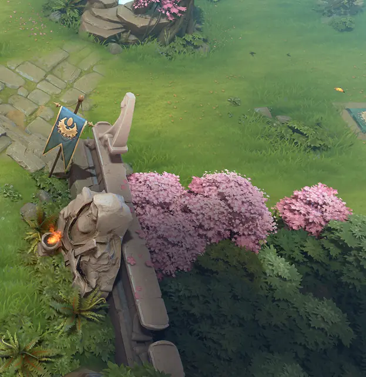
Games
- World of Warcraft
Study its buildings and props, which its lead environment artist says should look heavy, like they could hurt you.3
- Team Fortress 2
Study how its nine classes read by silhouette alone, with no internal shading at all.5
- Torchlight
Crisp, comic-book characters over painterly backgrounds, kept low-tech to run on virtually any system.9
- League of Legends
Study the 2014 Summoner's Rift, where painted elements define the edges and hide low polygon budgets.10
- Dota 2
Light baked or painted into each character's colour texture, and large, crisp graphic patterns for legibility.4
- Overwatch
Study the big bevels painted into its textures, and the corner pieces that stop levels feeling like a series of boxes.14
- Sea of Thieves
Rare wanted every object to tell a story and be in constant motion, from the waves to the clouds.2
Film, art and more
- Arcane
Painterly 3D animation. For its backgrounds, Fortiche builds a 3D set, then projects paint onto it with brushes close to traditional ones.18
- J. C. Leyendecker
One of the three commercial illustrators Valve based Team Fortress 2's look on, with Dean Cornwell and Norman Rockwell.5
- Spirited Away
Valve cited its art book when it compared Team Fortress 2's world textures to Miyazaki's background plates, where broad brush strokes appear in perspective.5
- Samwise Didier
Blizzard's senior art director, known for characters with big shoulders, feet and hands.12
Sources
- 1Crafting a WoW Diorama: Textures, Painting, Lighting
- 2Rare Sea of Thieves Art Blast
- 3Detail-oriented artist shows Blizzard how it's done
- 4Dota 2 Workshop - Color Texture Light Baking
- 5Illustrative Rendering in Team Fortress 2
- 6Ion Hazzikostas, Senior Game Director for ‘World of Warcraft’, Talks About What Makes This MMO Special, Even 20+ Years After Release (Interview)
- 7World of Warcraft
- 8World of Warcraft Student Art Contest Roundtable
- 9Torchlight Interview
- 10Dev Blog: Defining the Rift’s Visual Style
- 11How to Fine-tune your Lighting and Shadows on Sketchfab
- 12Samwise Didier discusses the history of Warcraft's art
- 13What’s It Like to Art Direct a Major Video Game?
- 14Technical and Visual Analysis of Overwatch
- 15World of Warcraft Student Art Contest 2025
- 16Texture Painting: Introduction
- 17Standard Material 3D and ORM Material 3D
- 18Arcane Artists Show How They Combine Traditional Art & 3D for Backgrounds